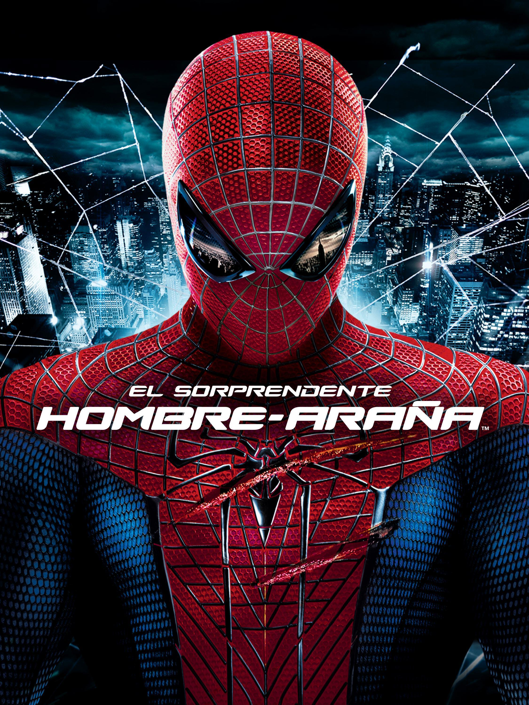
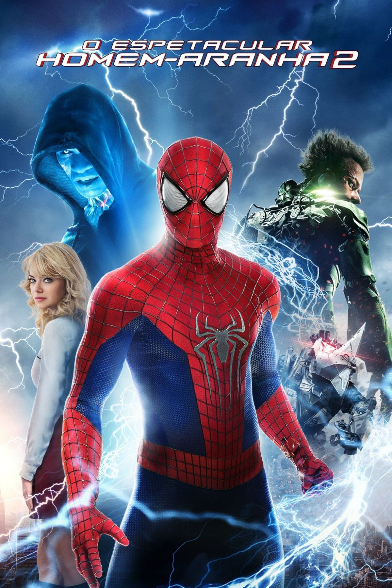
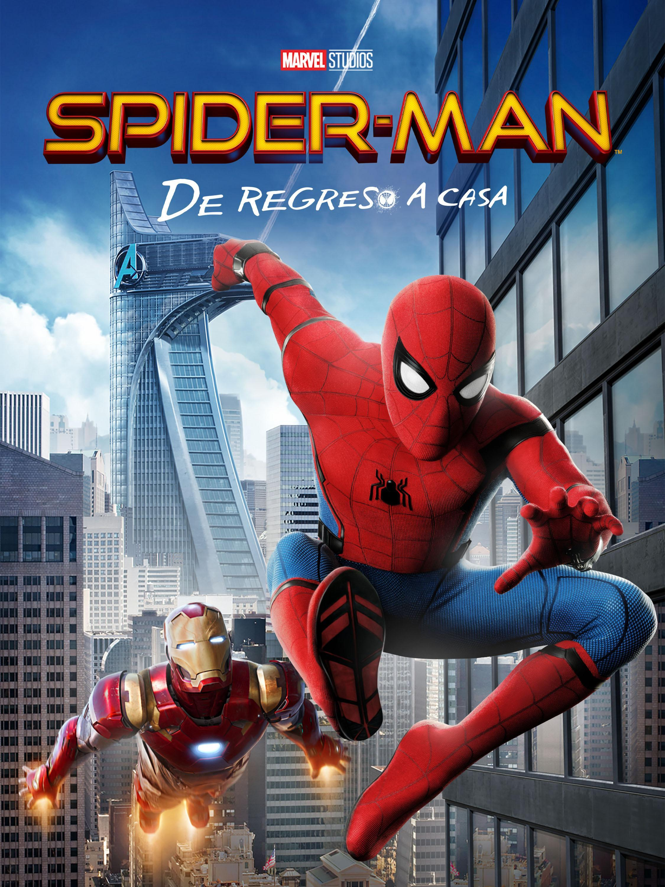
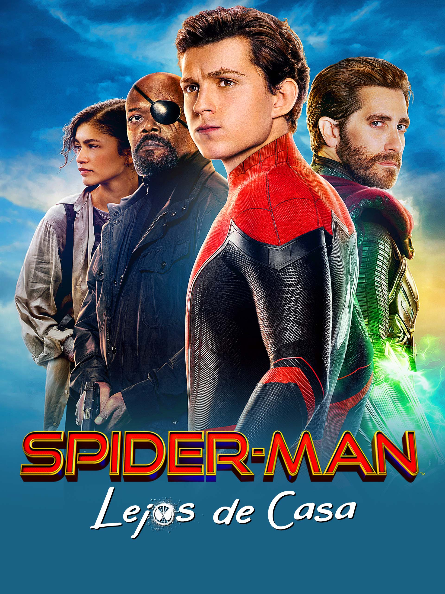

Un Top de las mejores peliculas


Top 1

El hombre araña
El origen del héroe. Tras ser mordido por una araña genéticamente modificada, el tímido Peter Parker adquiere habilidades sobrehumanas. Luego de una dolorosa tragedia familiar, aprenderá que un gran poder conlleva una gran responsabilidad al enfrentarse a su primer gran enemigo: el Duende Verde.
Last updated 3 mins ago
Top 2

El Hombre araña 2
La crisis de la máscara. Agobiado por equilibrar su vida personal, sus estudios y su deber como héroe, Peter decide renunciar a ser Spider-Man. Sin embargo, la aparición del implacable Doctor Octopus y el peligro que corre Mary Jane lo obligarán a aceptar su destino. Considerada una de las mejores películas de superhéroes de la historia.
Last updated 3 mins ago
Top 3

El Hombre araña 3
La batalla interna. El mundo de Peter parece ir de maravilla, hasta que un misterioso simbiote alienígena tiñe su traje de negro, corrompiendo su personalidad y sacando su lado más oscuro. Con la ciudad amenazada por Sandman, el nuevo Duende y Venom, Peter deberá librar la pelea más difícil: contra sí mismo.
Last updated 3 mins ago
Top 4

El Asombro Hombre araña
Un reinicio con un enfoque más moderno, de ciencia ficción y romance juvenil. Peter Parker busca descubrir la verdad sobre la misteriosa desaparición de sus padres, lo que lo lleva directamente a Oscorp. Tras la mítica picadura de araña, debe aprender a balancear sus nuevos poderes con su amor por Gwen Stacy, mientras se enfrenta al Dr. Curt Connors, transformado en el temible Lagarto.
Last updated 3 mins ago
Top 5

El Asombro Hombre araña: El poder de Electro
Con un traje increíble y un Peter mucho más seguro de su rol de héroe, la secuela eleva las amenazas en Nueva York. Spider-Man debe confrontar a Max Dillon, un antiguo empleado de Oscorp convertido en el inestable Electro, a la vez que su viejo amigo Harry Osborn regresa buscando una cura desesperada. Una película visualmente impresionante que marca el momento más trágico e impactante en la historia del personaje en el cine.
Last updated 3 mins ago
Top 6

El Hombre Araña: Homecoming
Luego de su emocionante debut en Civil War, un joven e hiperactivo Peter Parker regresa a su rutina escolar intentando demostrarle a Tony Stark que está listo para ser un Avenger formal. Desesperado por salir de las "misiones de barrio", Peter tropieza con el negocio ilegal de armas alienígenas liderado por Adrian Toomes, el Buitre, aprendiendo por las malas que el héroe es la persona, no el traje tecnológico.
Last updated 3 mins ago
Top 7

El Hombre Araña: Lejos de casa
Situada justo después de los eventos de Avengers: Endgame, Peter busca un respiro de la presión de ser un héroe viajando a Europa en una excursión escolar, con la firme intención de confesarle sus sentimientos a MJ. Sin embargo, las vacaciones se ven interrumpidas por Nick Fury y la aparición de un misterioso aliado de otra dimensión llamado Quentin Beck (Mysterio), forzando a Peter a madurar y asumir el peso del legado que le dejaron.
Last updated 3 mins ago